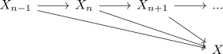
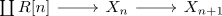

cw structure of a bounded below module spectrum for a connective ring spectrum
Proposition
Let $X$ be a bounded below module spectrum over a connective E_n-ring spectrum $R$ Then there a sequence of module spectra

such that
- $\mathrm{colim} X_n \simeq X$
- each $X_{n}$ sits in a bifiber sequence

Proof
similar to cw structure of a bounded below spectrum